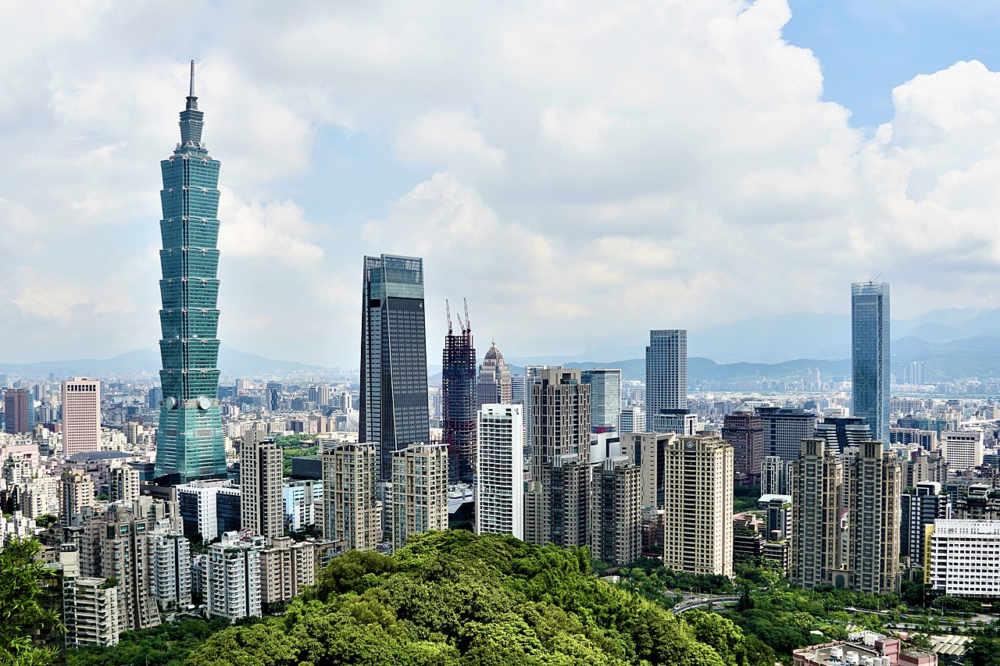

This is Page 1, Click here to go to Page 2.
The municipality is home to architectural and cultural landmarks, including Taipei 101 (which was formerly the tallest building in the world), Chiang Kai-shek Memorial Hall, Dalongdong Baoan Temple, Hsing Tian Kong, Lungshan Temple of Manka, National Palace Museum, Presidential Office Building, Taipei Guest House and Zhinan Temple. Shopping districts including Ximending as well as several night markets dispersed throughout the city. Natural features include Maokong, Yangmingshan and hot springs.Taipei's main development fields include the information and communications technology (hardware and software), biotechnology, general merchandizing (wholesale/retail), financial services, and MICE industries. Most of the country's major firms are based there including Acer Computers, Asus, CTBC Bank, Fubon Financial Holding, Tatung Company, D-Link, and others. 5 Global Fortune 500 companies are headquartered in Taipei. The city also attracts many multi-national corporations, international financial institutions, foreign consulates, and business organizations to set up base there. Thus, Taipei has nearly 3,500 registered foreign businesses and attracts over 50% of the total foreign investment in Taiwan. Foreign companies with offices or regional headquarters in Taipei include Google, Microsoft, IBM, Intel, HSBC, Citibank, Facebook, Amazon, Apple, JP Morgan, PwC, and many others. Most financial and foreign firms like to reside in the central business district of Taipei, the Xinyi Special District: Citi, JP Morgan, DBS Bank, Cathay Life Insurance, Shin Kong Commercial Bank, and Hua Nan Bank have all established skyscrapers in the area. Meanwhile, technology and electronics companies are often co-located in the Neihu Technology Park or the Nankang Software Park. The startup and innovation scene in Taipei is also very vibrant. In 2018 alone, Microsoft announced plans to invest US$34 million to create an artificial intelligence R&D center in Taipei, while Google announced it will hire 300 people and train 5,000 more in artificial intelligence for machines. Taipei is Google's biggest engineering site in Asia. IBM also announced in 2018 that it will develop a cloud research lab and expand its R&D center in Taipei with eyes on artificial intelligence, blockchain technology, and cloud computing. According to the 2016 Global Entrepreneurship Development Index, Taipei's entrepreneurial spirit ranks 6th worldwide and 1st in Asia. Taipei has more than 400 startups and numerous incubation centers, accelerators, venture capitals, and angel investors. The city's startup ecosystem is valued at US$580 million by Startup Genome in 2018.
